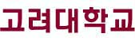
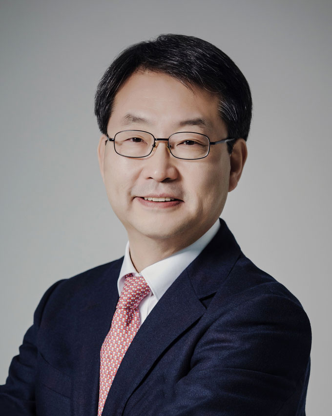
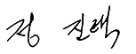

    <?php include "head.php";?> 
    <!----------------------------------서브 비쥬얼 시작 ---------------------------------->
    <section id="sub-visual">
        <figure></figure>
        <p>KOREA UNIVERSITY</p>
    </section>
    <!----------------------------------서브 비쥬얼 끝 ---------------------------------->
    <!----------------------------------서브 네비 시작 ---------------------------------->
    <section id="sub-nav">
        <div>
            <ul>
                <li><a href="index.html"><i class="xi-home-o"></i></a></li>
                <li>
                    <a>고대소개</a><i class="xi-angle-down-min"></i>
                     <ul>
                        <li><a>입학안내</a></li>
                        <li><a>대학·대학원</a></li>
                        <li><a>교육정보</a></li>
                        <li><a>대학생활</a></li>
                        <li><a>연구·산학</a></li>
                        <li><a>고대소식</a></li>
                    </ul>
                </li>
                <li>
                    <a>총장실</a><i class="xi-angle-down-min"></i>
                    <ul>
                        <li><a>대학현황</a></li>
                        <li><a>총장실</a></li>
                        <li><a>고대비전</a></li>
                        <li><a>상징</a></li>
                        <li><a>홍보물</a></li>
                        <li><a>고대역사</a></li>
                        <li><a>캠퍼스안내</a></li>
                    </ul>                    
                </li>
                <li>
                    <a>총장인사말</a><i class="xi-angle-down-min"></i>
                    <ul>
                        <li><a>총장인사말</a></li>
                        <li><a>Speeches</a></li>
                        <li><a>총장약력</a></li>
                        <li><a>총장동정</a></li>
                        <li><a>역대총장</a></li>
                    </ul>                    
                </li>
            </ul>    
        </div>    
    </section>    
    <!----------------------------------서브 네비 끝 ---------------------------------->
    <!----------------------------------서브 컨텐츠 시작  ---------------------------------->      
    <section id="sub-main">
        <h2></h2>
        <div>
            <div>
                <p>" 사람 중심의 고려대가 새로운 가치를 만들어갑니다. "</p>
                <p>제20대 총장 정진택 취임사 中</p>
                <span>자세히보기<i class="xi-long-arrow-right"></i></span>
            </div>
            <div>
                
                <p>정진택 (鄭眞澤)<a>총장</a></p>
                
            </div>
        </div>
        <div class="sub-career1">
            <h2>주요경력</h2>
            <ul class="career">
                <li><span>2020-현재</span><a>고려대학교 공과대학 교수</a></li>
                <li><span>2020-현재</span><a>한국공학한림원 정회원</a></li>
                <li><span>2020-현재</span><a>한국대학스포츠협의회장</a></li>
                <li><span>2017-2018</span><a>고려대학교 기술경영전문대학원장</a></li>
                <li><span>2016-2018</span><a>고려대학교 공과대 학장 겸 공학대학원장</a></li>
                <li><span>2014-2015</span><a>미국 조지워싱턴 대학교 방문 교수</a></li>
                <li><span>2011-2013</span><a>고려대학교 기계공학부 학부장</a></li>
                <li><span>2009-2011</span><a>고려대학교 대외협력처장</a></li>
                <li><span>2008-2009</span><a>고려대학교 교수학습개발원(CLT) 원장</a></li>
                <li><span>2007-2008</span><a>미국 메릴랜드대학교 방문 교수</a></li>
                <li><span>2004-2006</span><a>고려대학교 공과대학 교학부학장</a></li>
                <li><span>2004-2006</span><a>고려대학교 공학교육연구센터 센터장</a></li>
            </ul>
        </div>                 
        <div class="sub-career">
            <h2>학력사항</h2>
            <ul class="career2">
                <li><span>1992</span><a>University of Minnesota (공학박사)</a></li>
                <li><span>1985</span><a>고려대학교 대학원 기계공학과 (공학석사)</a></li>
                <li><span>1983</span><a>고려대학교 공과대학 기계공학과 (공학사)</a></li>
            </ul>
            <h2>대외활동 및 학회</h2>
            <ul class="career2">
                <li><a>한국유체기계학회 회장, 수석부회장, 부회장, 총무, 사업, 홍보이사</a></li>
                <li><a>대한기계학회 열공학 부문 회장, 수석부회장, 부회장, 학술이사</a></li>
                <li><a>한국자동차공학회 영문저널(IJAT) 편집위원(현), 사업이사, 재무이사</a></li>
                <li><a>대한기계학회 국문논문집 편집인</a></li>
                <li><a>한국연소학회 이사</a></li>
            </ul>
            <h2>주요상훈</h2>
            <ul class="career2">
                <li><span>2013</span><a>한국유체기계학회 학술상 수상</a></li>
                <li><span>2012</span><a>지식경제부 장관상(산학연협력유공자상)</a></li>
                <li><span>2012</span><a>대한기계학회 우수논문상</a></li>
                <li><a>석탑강의상 7회 수상</a></li>
                <li><a>우수강의상 7회 수상</a></li>
                <li><span>1983</span><a>고려대학교 총장상(공과대학 수석졸업)</a></li>
            </ul>  
            <h2>연락처</h2>
            <ul class="career2">
                <li><span>전화번호</span><a>02-3290-1003</a></li>
                <li><span>이메일</span><a>president@korea.ac.kr</a></li>
                <li><span>팩스</span><a>02-929-3933</a></li>
            </ul>                                                                             
        </div>       
        <span>MORE<i class="xi-angle-down-min"></i></span>
    </section>
    <!----------------------------------서브 컨텐츠 끝  ---------------------------------->    
    <?php include "tail.php";?> 